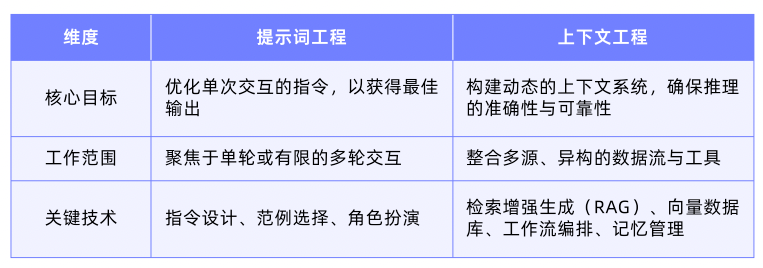
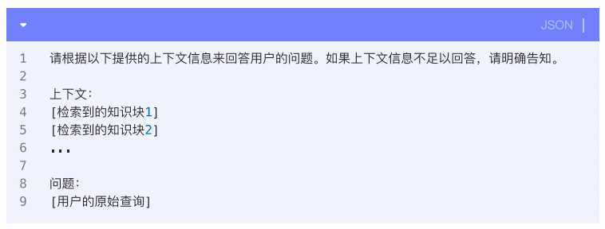

【AI白皮书】上下文工程¶

4.1 提示词工程¶
提示词工程，不是简单的提问，而是一套涵盖指令设计、上下文注入、角色设定和格式控制的综合性技术。
4.1.1 优秀提示词的核心实践¶
明确角色与目标
范例：“假设你是一位拥有10年经验的市场营销总监，请为一款新型智能手表起草一份面向年轻专业人士的产品介绍文案。”
提供清晰指令与完整上下文
范例：“请总结以下技术文章的核心观点（不超过200字），并列出其中提到的三个关键数据。不要添加个人评论。文章内容如下：[在此处粘贴文章]”
运用范例进行引导
范例：“请分析以下句子的情感及关键对象。范例：输入：‘我喜欢这部电影的剧情。’输出：{’sentiment’: ‘positive’, ‘aspect’: ‘plot’}。现在，请分析这个句子：‘这台相机的画质很棒，但电池续航太短。’”
定义结构化输出格式
范例：“请将你的回答组织成JSON格式，包含’product_name’和’key_features’两个字段，其中key_features是一个包含至少三项功能的数组。”
4.1.2 提示词工程的固有局限性¶
应对动态及长流程任务的局限
应对模型固有的无状态特性
无法突破模型固有的知识边界
长上下文中的信息利用不均衡
正是因为提示词工程有诸多局限性，上下文工程（Context Engineering）应运而生。
4.2 上下文工程¶
上下文工程的核心理念，在于将AI应用开发的焦点从优化单次交互的指令，转向为模型的每一次推理动态构建一个完整、准确且高效的认知环境。它不再局限于设计静态的提示词模板，而是致力于创建一个系统，确保模型在执行任务时，能够实时获取并利用完成该任务所需的所有相关信息，包括外部知识、历史记忆、可用工具及执行环境。
4.2.1 上下文工程与提示词工程的核心区别¶

4.2.2 上下文工程的关键组成部分¶
外部知识库的动态供给
长期与短期记忆系统
工具与能力的扩展
运行时的上下文管理
4.3 RAG技术原理与挑战¶
4.3.1 RAG的基础范式：三阶段工作流¶
1、第一阶段：索引（Indexing）
将原始的外部知识转化为机器可高效检索的格式。文档解析与提取，文本分块（Chunking），语义向量化（Embedding），构建向量索引库。
2、第二阶段：检索（Retrieval）
根据用户的自然语言查询，从已构建好的向量索引库中，快速、准确地找出最相关的N个知识块（Top-K）。
3、第三阶段：生成（Generation）
将前一阶段检索到的多个相关知识块与用户的原始查询进行整合，构建一个增强的提示词（Augmented Prompt）。比如：

4.3.2 RAG在工程化落地中面临的挑战¶
知识单元的完整性与信息密度的抉择
难以精准捕捉模糊、多样的用户意图
召回匹配时难以兼顾语义相关性与关键词精确性
需要探索如何在检索精度与完整性之间取得平衡
应对需要多知识点综合推理的查询实现
4.4 RAG系统优化实践：索引构建¶
4.4.1 基础文本分块策略¶
1、固定大小分块
2、基于句子或段落分块
3、语义分块：引入Embedding技术计算相邻文本单元间的语义相似度，在相似度得分显著下降的位置进行切分，从而识别出文本中的语义边界。
4.4.3 处理复杂文档的索引策略¶
文档除了纯文本，还包括表格、图片、代码、脚注等复杂结构。
1、层次化索引
为文档的顶层机构（如章节标题或摘要）创建摘要索引，为底层的详细内容创建区块索引。
2、多模态内容的处理与表示
文本：采用语义分块策略。
表格：提取结构化数据（如转化为Markdown或JSON格式），或对表格进行摘要描述，并单独索引。
图像：使用OCR技术提取图中文字，并结合图像描述模型（Image Captioning）生成对图像内容的语义描述，共同作为该图像的索引内容。
综上所述，索引构建是一个需要根据数据源的特性、结构和应用场景，进行策略选择与组合优化的过程。
4.5 RAG系统优化实践：检索流程¶
4.5.1 查询理解与增强¶
将用户原始、模糊的查询，转化为机器更容易理解、更适合下游检索的结构化或增强型查询。
1、查询改写与扩充
采用改写-检索-阅读（Rewrite-Retrieve-Read）框架，在检索前增加一个“改写”步骤。比如将“AI原生应用咋回事”改写为“AI原生应用的核心特征有哪些”。
2、复杂问题分解
利用LLM识别出原始问题中隐藏的、需要独立解答的子任务。比如“对比A产品和B产品在性能和成本上的差异”分解为四个子查询：“A产品的性能是什么”、“B产品的性能是什么”、“A产品的成本是多少”、“B产品的成本是多少”。
3、假设性文档嵌入（HyDE）
不直接用用户的简短查询去匹配冗长的文档，而是先利用LLM生成一个“假设性的”理想答案文档，然后用这个内容更丰富、与真实答案在形式和语义上更接近的假设性文档去进行向量检索。
4.5.2 多路召回与混合检索¶
从索引库中找出所有相关的候选文档。
1、向量检索与关键词检索的协同
系统并行执行这两种检索，各自生成一个候选文档列表。
2、倒数排名融合（RRF）
一个文档如果在多个不同的检索结果列表里都排在靠前的位置，那么它很可能是一个非常相关的文档。
4.5.3 结果精炼与上下文重组¶
针对候选文档池，进行结果精炼和上下文重组，提高生成答案质量。
1、重排序（Rerank）
使用一个更强大、更复杂的模型（如交叉编码器）来对查询与每个候选文档进行深度交互，从而计算出一个比向量相似度更精准的相关性分数。
2、自动合并检索
在数据处理阶段就建立起文档块之间的层级关系，并在检索后智能地将离散的子块合并回更完整的父块。
4.6 RAG的未来方向¶
从一个被动的静态检索工具，发展为一个主动的、多维的、具备推理能力的智能知识基础设施。
4.6.1 Agentic RAG¶
在传统RAG中，检索是一个被动、前置的步骤；而在Agentic RAG中，检索被封装成一个智能体可以自主调用、评估和迭代的工具（Tool）。智能体基于LLM决定是否检索、何时检索、检索什么以及如何利用检索结果。
4.6.2 多模态RAG¶
通过统一的嵌入与检索机制，将文本、图像、语音等不同类型的内容纳入同一个语义空间。比如以文搜图、文搜视频等。
4.6.3 知识图谱与RAG的融合¶
通过将实体、关系和属性建模为图结构，与传统的向量、关键词检索协同，实现了双规驱动的范式。在法律、医疗、金融等强调逻辑一致性与合规性的场景中特别有价值。
总结，Agentic RAG提供了任务导向的自主规划与自我校验能力，多模态RAG扩展了外部大脑的感知边界，Graph RAG增强了结构化推理与可追溯合规的能力。